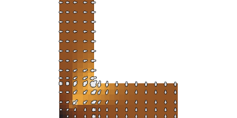

corner2d-heat-flow-steady

{"preset":"corner2d","field":"Heat flow |q|","display":"steady field","arrows":true,"scaleMax":"5.26 W/m²"}
f_Rsi (R_si = 0.25 m²K/W) = 0.897 ✓ ≥ 0.70 · θ_si,min = 18.87 °C · ψ = -0.0646 W/(m·K) — external dimensions · U = 0.196 W/(m²K) · L₂D = 0.4888 W/(m·K) · Φ_exterior = 5.377 W (20 °C inside / 9 °C outside)
- ✓ concentration — maxLum 232.2 − meanLum 107.2 = 125.0 (≥ 30) over 14500 solid px
- ✓ brighter(corner>interior) — corner lum 140.9 − interior lum 80.7 = 60.2 (≥ 15)
- ✓ glyph-layer-nonempty — arrows changed 21.08% of solid pixels (≥ 1.0%)